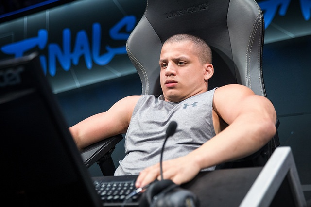

The Life of LolTyler 1
Twitch Streamer & Youtuber

Picture of Tyler1 in NA LCS 2018
Tyler Steinkamp (born March 7, 1995), better known by his online alias tyler1, T1 or TT for short, is an American internet personality and streamer on Twitch.
He is one of the most popular League of Legends online personalities with more than 4.2 million followers on Twitch.
Timeline for Tyler1's League of Legends Career
- 2014 - Tyler1 ranked 14th on the North American League of Legends ladder.
- 2016 - Tyler1's stream rapidly grew in popularity when he publicly announced that he had "reformed". His Twitch channel reportedly increased from around 5,700 followers before the announcement to over 92,000 followers by the end of April.
- April 30th 2016 - Riot Games employee "Riot Socrates" announced that due to "a well-documented history of account bans for verbal abuse" and player harassment, Steinkamp would no longer be allowed to own a League of Legends account.
- November 2017 - Steinkamp hosted an online League of Legends tournament called the Tyler1 Championship Series (TCS). A parody of the League of Legends Championship Series (LCS), Steinkamp streamed in front of a green screen to images of LCS stadiums and a commentators' desk. The tournament peaked at over 200,000 concurrent viewers on Twitch and was viewed by professional players and LCS casters. The winning team was awarded $10,000, funded from Steinkamp directly and without any sponsors.
- January 2018 - Steinkamp announced that he had been unbanned, which was later confirmed with Riot Games by Kotaku. Tyler's first stream after he became unbanned in January 2018 peaked at over 382,000 viewers, breaking the record for the most concurrent viewers for an individual streamer on Twitch.
- October 2020 - Tyler1 was signed by the South Korean esports team T1 as a content creator.
If you're interested in additional information I excluded, check out his wikipedia page
here.